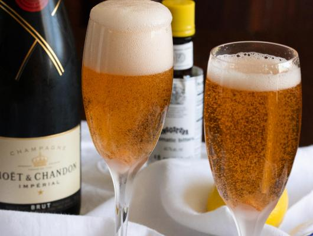

Champagne Cocktail - Valentine's Day Cocktail

With Valentine's Day just around the corner, I couldn't resist sharing one of my favorite drinks:
the Champagne Cocktail. This classic, elegant beverage, known for its effervescent charm, has long
symbolized romance and transcended social boundaries. In fact, it's hailed as the world's most
romantic drink. Cheers to love and Champagne!
Ingredients
1 sugar cube
2 dashes of Angostura bitters
1/2 teaspoon Brandy
1 lemon twist
Preperation
1. Place the sugar cube in a chilled champagne flute and saturate with the bitters.
2. Add the brandy and top with the Champagne and garnish with the lemon twist.